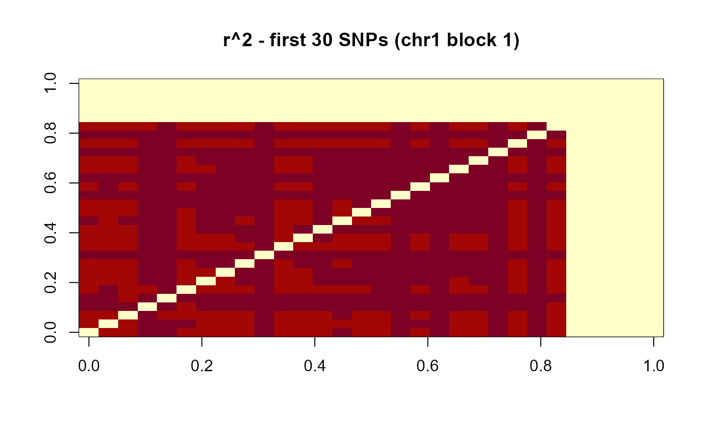

A simulated additive genotype matrix for 120 individuals and 230 SNPs
spanning three chromosomes, designed to exhibit clear LD block structure
suitable for demonstrating run_Big_LD_all_chr
and extract_haplotypes.
Format
A numeric matrix with 120 rows (individuals, named ind001
to ind120) and 230 columns (SNPs). SNP identifiers follow the
pattern rs{CHR}{count}: chromosome 1 uses rs1001–rs1080,
chromosome 2 uses rs2001–rs2080, chromosome 3 uses
rs3001–rs3070. Values are additive dosages in
{0, 1, 2} with no missing data.
Source
Simulated with data-raw/generate_example_data.R
using a founder-haplotype model (K = 4 founders per block).
Seed: set.seed(20250407).
Structure
The 230 SNPs are divided across three chromosomes (80, 80, 70 SNPs respectively). Each chromosome contains three distinct LD blocks separated by short stretches (5 SNPs) of low-LD singletons and a 50 kb inter-block gap:
- Chromosome 1
Three blocks of 25, 20, and 25 SNPs.
- Chromosome 2
Three blocks of 30, 20, and 20 SNPs.
- Chromosome 3
Three blocks of 20, 20, and 20 SNPs.
Within each block, SNPs were generated using a founder-haplotype model:
K = 4 binary founder haplotypes are drawn per block, then each individual
is assigned a diploid combination of two founders (flip rate 1%, MAF
enforced >= 10% per SNP). This guarantees at most K(K+1)/2 = 10
distinct diplotype classes per block (~12 individuals per class), ensuring
sufficient diversity for estimate_diplotype_effects.
Between-block SNPs are simulated independently from binomial distributions
with randomised allele frequencies to produce near-zero LD.
Examples
data(ldx_geno)
dim(ldx_geno) # 120 230
#> [1] 120 230
range(ldx_geno) # 0 2
#> [1] 0 2
# Compute r^2 for the first 30 SNPs
r2 <- compute_r2(ldx_geno[, 1:30])
image(r2, main = "r^2 - first 30 SNPs (chr1 block 1)")

# \donttest{
# Sliding-window diversity scan (independent of LD blocks)
data(ldx_snp_info)
scan <- scan_diversity_windows(
geno_matrix = ldx_geno,
snp_info = ldx_snp_info,
window_bp = 50000L,
step_bp = 25000L,
min_snps_win = 3L
)
head(scan[, c("CHR","win_mid","n_snps","He","freq_dominant")])
#> CHR win_mid n_snps He freq_dominant
#> 1 1 25999 25 0.9164 0.1833
#> 2 1 75999 25 0.9976 0.0333
#> 3 1 100999 24 0.9966 0.0333
#> 4 1 150999 26 0.9990 0.0167
#> 5 1 175999 29 0.9966 0.0250
#> 6 1 200999 4 0.8859 0.1917
# }